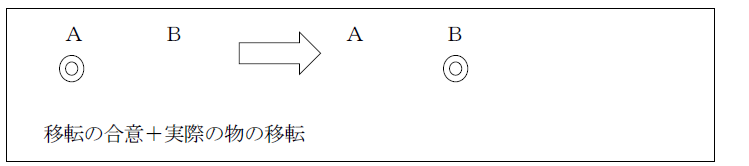
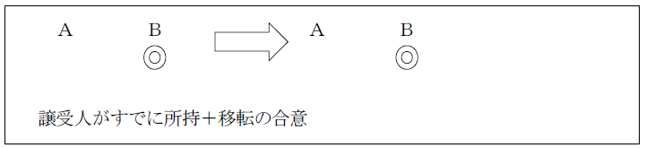
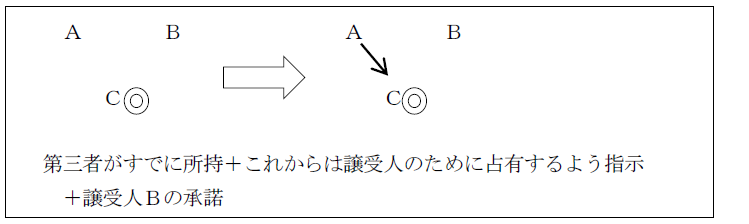
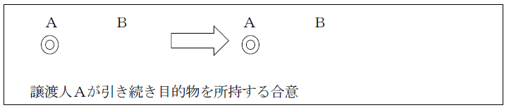
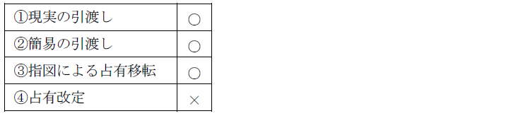

第２編 物権
第１章 総論
第３節 物権変動
Ⅳ 動産物権変動－178条論
1. 動産物権変動の対抗要件－引渡し（178条）
引渡しの態様
①現実の引渡し
②簡易の引渡し
③指図による占有移転
④占有改定
①現実の引渡し

②簡易の引渡し

③指図による占有移転

④占有改定

2. 「対抗することができない」の意味－「対抗」の法的構成
(1) 「対抗することができない」の意味－177条と同様
(a) 対抗要件は「引渡し」である。
(b) 例外－動産であっても「引渡し」が対抗要件とならないもの
①登記・登録で公示される動産
ex. 登記された船舶、登録された自動車
②不動産とともに不動産の登記によって公示される動産
ex. 建物の従物たる建具類－その対抗要件は、建物の登記である。
(2) 「引渡し」の意義
引渡しとは、占有の移転のことである。本来、引渡しは現実の占有移転、すなわち、現実の引渡しのみを指すが、観念的引渡しである簡易の引渡し、占有改定、指図による占有移転をも含む。
3. 178条の「第三者」
※ 177条の議論を参照
(1) 賃借人・転借人は「第三者」にあたる（賃借人につき大判大４.４.27、転借人につき大判大８.10.16）。
(2) 受寄者は「第三者」ではない（最判昭29.８.31）。
(3) 転々譲渡における前主又は後主は「第三者」ではない。
4. 引渡しを対抗要件とする物権変動
所有権の譲渡及び復帰に限る。
占有権・留置権・質権は占有を成立ないし存続の要件とする。
1. 総説
動産については、一般に不動産と異なり所有者を登記により公示することは困難である。とすると、動産を譲り受けようとする者が処分権を有しない者と取引する可能性は不動産以上に高い。そこで、前者の占有に対する信頼を権利関係にまで高めることにより取引の安全を図ろうとして、公信の原則を定めた。
2. 要件
①目的物が動産であること
②前主の無権利ないし無権限であること
③有効な取引行為によること
④取得者が平穏・公然・善意・無過失であること
⑤取得者が占有を取得すること
(1) 動産であること
(a) 動産に該当するとされた例
①成熟期に達した稲立毛（大判昭３.８.８）
②未登録の自動車（最判昭45.12.４）
③不動産とともに処分された他人所有の従物（大判昭８.７.20）
家屋を買い受けた者は、その引渡しを受けた場合に、買受前に退去した借家人が備え付けた畳の所有権を取得することがある。
(b) 動産に該当しない例
金銭（価値としての金銭、最判昭39.１.24）、伐採前の立木（大判昭７.５.18）
Ｑ 登録自動車について即時取得（192条）は適用されるか。登記・登録によって公示される動産は、占有の移転を公示方法とする通常の動産と性質が異なるため問題となる。
→ 192条の適用を否定（最判昭62.４.24・通説）
「道路運送車両法による登録を受けている自動車については、登録が所有権の得喪並びに抵当権の得喪及び変更の公示方法とされているのであるから（同法５条１項、自動車抵当法５条１項）、民法192条の適用はないものと解するのが相当であ」る。
(2) 前主の無権利ないし無権限
(a) 前主が無権利ないし無権限であるとされた例
①賃借人
②受寄者
③二重売買の第１買主が占有改定又は指図による占有移転を経たのちの売主
(b) 非該当例
①無権代理人に表見代理が成立し得ることは別にして、即時取得の適用はない。
②権利者だが意思無能力者・制限行為能力者である場合
③売主が錯誤に陥った場合
ただし、これらの場合の転得者には、192条の適用がある。
ex．未成年者Ａが所有する甲動産をＢに売却し引渡した後、制限行為能力を理由に契約を取り消した。その後、Ｂは、甲動産を取消しにつき善意無過失の第三者に売却して現実の引渡しをした場合には、即時取得の適用がある。
(3) 有効な取引行為によること
本条が公信の原則を規定したものである以上、取引行為によらない動産取得者を保護する必要はないことから、要求される。
(a) 有効な取引行為にあたる例
売買、贈与、弁済、代物弁済、質権設定、消費貸借、競売
(b) 非該当例
①相続のような包括承継、又は原始取得による占有取得には適用がない。
②伐採前の立木を非所有者から譲り受け、譲受人が自ら伐採しても即時取得できない（ただし、その者からの転得者には本条の適用がある）。
(4) 平穏・公然・善意・無過失
これら要件は、占有取得時に必要とされる。
① 186条１項によって、平穏・公然・善意は推定される。
② 無過失については、188条により、譲受人たる占有取得者が譲渡人に処分権があると信ずるについては過失のないものと推定され、占有取得者自身において過失のないことを立証することを要しない（最判昭41.６.９）。
以上２つの結果から、この要件は推定されることになり、即時取得を否認する者に立証責任が負わされる。
法人における善意・無過失は、その法人の代表者について決するが、代理人が取引行為をしたときは、その代理人について決すべきである（最判昭47.11.21）。
(5) 占有の承継取得

(a) 占有改定（183条）と即時取得
占有改定による即時取得はできない（最判昭35.2.11）
（理由）
①一般の外観上従来の占有事実の状態に何らの変更の生じない占有改定により即時取得が生じるとすれば、他人の利害関係、ことに従前占有を他人に委ねた権利者の利害を全然顧慮しないことになる。
②対抗要件としての「引渡し」（178条）と権利取得の要件としての「占有」（192条）とは分けて考えるべきである。
(b) 指図による占有移転（184条）と即時取得
指図による占有移転によって即時取得は成立するだろうか。指図による占有移転も、外観上物の占有状態に変動を生じさせない点では、占有改定と同じであり問題となる。
→ 肯定説（最判昭57.９.７）
（理由）
①所持こそ動いていないが、真正権利者の信頼は形の上でも完全に裏切られている。
②譲渡人が現に所持していない点と、第三者たる所持人に対する命令を必要とする点（184条）で、即時取得行為の存否を比較的に外部から認識することができる。
3. 効果
(1) 取得される権利
「動産について行使する権利」を取得する。
所有権の他、質権にも適用がある。動産の先取特権に準用される（319条）。譲渡担保権にも適用される。
(2) 即時取得の効果
原始取得である。従来その権利に付着していた負担・制限は消滅する。
①即時取得者は、原権利者には不当利得返還義務を負わない。
②原権利者は、譲渡人への債務不履行又は不法行為責任の追及により損害を回復できる。